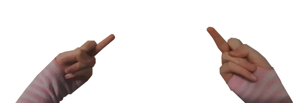

You know, sometimes playing as the super ultra masculine doom guy can be immersion breaking. What if I feel it would be closer to my real life self if doom guy was a femboy? Assuming many people have had this issue, I immedietly got to work on modding it into the game. The only problem is I had never made a doom mod before. Oh boy..... here we go again :3 Another dumb project that I'm not qualified to do! Luckily for me simple texture replacments arn't that hard once you figure out what you are doing. With this in mind, the premis of the mod is that I replace all the weapons with pictures of me holding the weapons while wearing striped arm leggings (classic femboy atire.) Unfortunatly I don't have toy guns lying around, so all the weapons have been replaced with hand gestures. For example: 